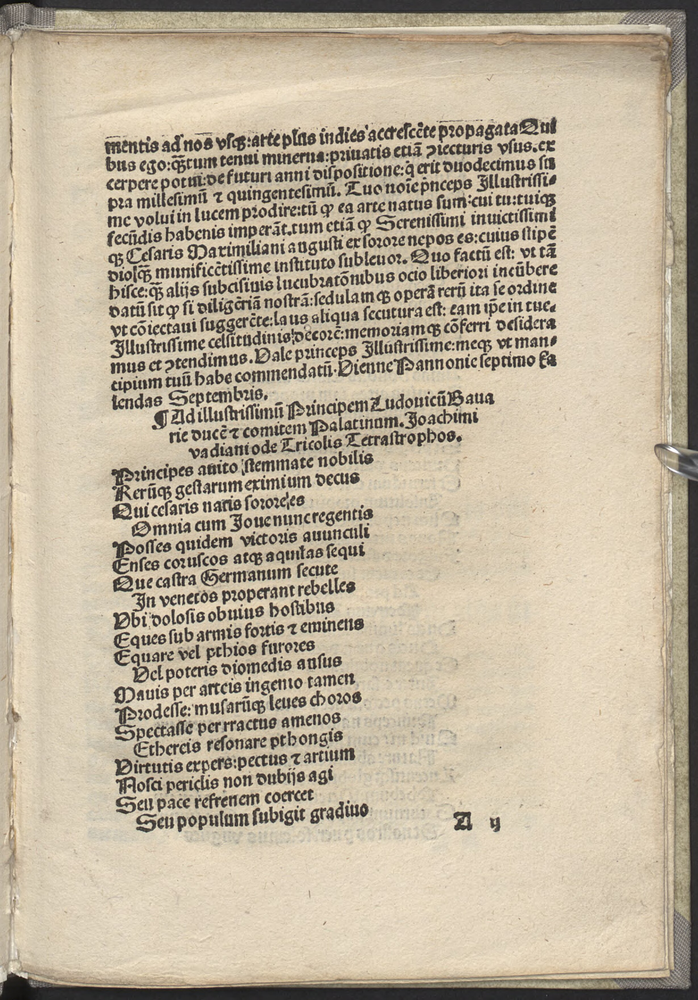
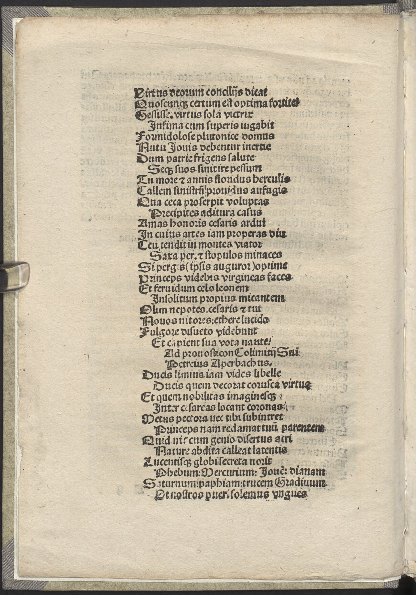

Tannstetter Collimitius 1 (Joachim Watt)
Faksimile


Transkription
Ad illustrissimum Principem Ludovicum Bavariae ducem et comitem Palatinum. Joachimi vadiani ode Tricolis Tetrastrophos.
Principes avito stemmate nobilis
Rerumque gestarum eximium decus
Omnia cum Iove nunc regentis,
Posses quidem victoris avunculi
Enses coruscos atque aquilas sequi
Quae castra Germanum secutae
In venetos properant rebelles,
Ubi dolosis obvius hostibus
Eques sub armis fortis et eminens
Aequare vel pthios furores
Vel poteris diomedis ausus.
Mavis per artes ingenio tamen
Prodesse: musarumque leves choros
Spectasse per rractus amoenos
Aethereis resonare phthongis,
Virtutis expers: pectus et artium
Nosci periclis non dubiis agi
Seu pace refrenem coercet
Seu populum subigit gradivo.
Virtus deorum conciliis dicat
Quoscumque certum est optima fortiter
Gessisse. Virtus sola victrix
Infima cum superis iugabit.
Formidolosae plutonicae domus
Nutu Iovis debentur inertiae
Dum patriae frigens salute
Seque suos sinit ire pessum.
Tu more et annis floridus herculis
Callem sinistrum providus aufugis
Qua caeca proserpit voluptas
Praecipites aditura casus.
Amas honores caesaris ardui
In cuius artes iam properas diu
Ceu tendit in montes viator
Saxa per et scopulos minaces.
Si pergis (ipsis auguror) optime
Princeps videbis virgineas faces
Et fervidum caelo leonem
Insolitum propius micantem.
Olim nepotes. caesaris et tui
Novos nitores: aethere lucido
Fulgore disueto videbunt
Et capient sua vota nautae.
Übersetzung
Eine vierstrophige Ode in Trikola des Joachim Watt an den den vornehmsten Herrscher Ludwig Herzog von Bayern und Pfalzgraf.
Mein Herr, edel durch einen uralten Stammbaum, und außerorderntliche Zier der Geschichte, der du von der Schwester des Kaisers, der nun alles mit Jupiter beherrscht, geboren wurdest, zwar könntest du den schimmernden Schwertern und Legionsadlern des siegreichen Onkels folgen, die den Lagern der Deutschen folgen und den aufständischen Venetern entgegeneilen, wo du listenreichen Feinden entgegentretend als unter den Waffen stehender tapferer und herausragender Ritter pthiische Raserei oder die Wagnisse des Diomedes erreichen können wirst. Dennoch ziehst du es vor, durch Künste und Talent zu nützen, die zarten Reigen der Musen durch liebliche (???) zu betrachten, und <Dinge> mit himmlischen Klängen widerhallen zu lassen, frei von Heldentaten auch das Herz der Künst zu erkennen, nicht durch ungewisse Gefahren getrieben zu werden, sei es, dass er das ungezügelte Volk durch Frieden bändigt, sei es, dass er es durch Krieg unterwirft. Die Tugend der Götter soll in Versammlungen sagen, von wem auch immer feststeht, dass sie die besten <Dinge> tapfer verrichtet haben. Als einzige Siegerin wird die Tugend die untersten <Dinge> mit den oberen verbinden. Auf Wink des Jupiter sind die furchterregenden Häuser des Pluto der Untätigkeit verfallen, während der Tote sich und die Seinigen wegen des Wohls der Heimat umkommen lässt. Du, der du an Charakter und Jahren blühend bist, entkommst in weiser Voraussicht der unheilvollen Gasse, wo die blinde Lust vorwärts kriecht, im Begriff, gefährliche Unglücksfälle auf sich zu nehmen. Du liebst die Ehrungen des erhabenen Kaisers, zu dessen Künsten du schon lange eilst, wie ein Wanderer durch Steine und drohende Felsen in die Berge zieht. Wenn du bestens weitergehst, <so> prophezeie ich diesen selbst, wirst du als erster jungfräuliche Fackeln und einen feurigen Löwen am Himmel sehen, der allzu nahe ungewöhnlich funkelt. Einst werden die Nachkommen des Kaisers und dein neues Strahlen am leuchtenden Himmel mit ungewohnten Schimmer sehen und sie werden ihre Gelübde des Seemanns fassen.
Metadaten
| Titel des Gedichts: | Ad illustrissimum Principem Ludovicum Bavariae ducem et comitem Palatinum. Joachimi vadiani ode Tricolis Tetrastrophos. |
| Autor der Gedichts: | Joachim Watt (Joachim Vadianus) |
| Containerwerk: | Iudicium viennense. Anni Millesimi quingentesimi duodecimi, Wien 1512 |
| Autor des Containerwerks: | Georg Tannstetter (Georgius Collimitius) |
| Gattung des Containerwerks: | astronomische Berechnungen, Voraussagen für das kommende Jahr |
| Erscheinungsjahr: | 1512 |
| Verschlagwortung: | Herrscherlob, Dichtung, Tugend, Lebensführung, Nachruhm, Unsterblichkeit |